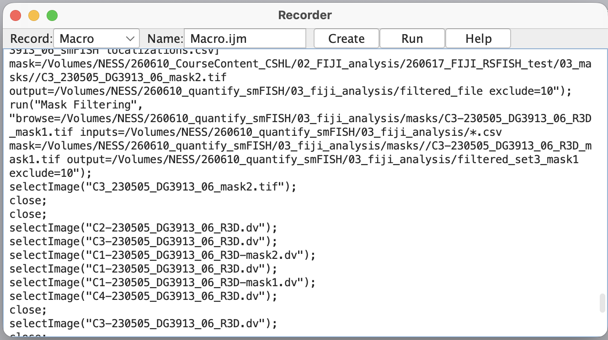

Automating FIJI with Macros#
References and Resources#
What are macros?#
Recall back to the start of this tutorial. I asked you to start the macro recorder. Let’s return to this window (if yours is still open) and see what is there.
{kind=link}

The macro recorder converted all the clicking, selecting, and toggling into text.
Macros are ordered sequences of text-based commands that FIJI can implement in lieu of the graphical user interface (GUI). Macros are basically programs, scripts, or codes that are specific to FIJI. FIJI Macros are written in ImageJ Macro Language (IJM), a specialized language. However, macros can also be implemented in JavaScript and Python (Jython). The IJM language is very similar to other programming languages and is easy to use.
A few characteristics that set it apart:
////////////////////////////////////////////////
// Two forward slashes are comments
////////////////////////////////////////////////
// Variables are specified with equals sign (=) and statements end in a semi-colon (;)
factor = 1024;
// Messages are enclosed in quotes and can be concatenated with plus (+)
message = "Hello " + "World!";
// built in functions use parentheses to enclose arguments and options
newImage("My pretty new image", "8-bit black", 640, 480, 1);
// new functions can be created by the user
function closeImageByTitle(title) {
selectWindow(title);
close();
}
////////////////////////////////////////////////
// Flow control works like many other languages
////////////////////////////////////////////////
// if/else if/else flow control
if (is("binary")) {
write("The current image is binary");
}
else {
write("The current image is not binary");
}
// for loops are common
for (image = 1; image <= imageCount; image++) {
selectImage(image);
rename("image-" + image);
}
// while and do loops are also possible
For more information, see the references at the top of this page.
Overall, if you are used to writing in linux/bash, python, R, javascript, or java, this should be an easy learning curve. If you don’t yet code - just start! Starting with any coding language will make the next languages easier as most of the concepts (variables, flow control, loops, and functions) will all be the same.
Yes, IJM is a language, but let’s be honest, users don’t usually just sit down and compose a FIJI macro like you would write an e-mail to a friend. Instead, most macros start out as macro recordings. Or, developers write snippets that users can then modify, or hack, for their purposes.
Indeed, RS-FISH comes with an example macro.
Let’s explore a simple macro#
Let’s open a macro that I have written for you…
Go to
Plugins -> Macros -> Edit ...Select the script
~/260710_quantify_smFISH/02_scripts/split_smFISH_channels.ijmClick
Open
Notice how comments separate the macro into sections.
Header this section is titled Select Your Parameters. It contains code that the user is expected to alter.
The header also includes some description of how the user can hack the code
Section below the header is the macro script itself and has the commands and instructions
Notice how comments within the code help to explain each step
Notice that there is a for loop that will iterate the same commands over every file in a directory.
We will not run this macro, but if we did, we would simply change the header content, change any lines of the code we wanted to customize, and then press Run.
Instead, I have already run this code for you. It splits each .dv file into a C1 (channel 1) stack and a C2 (channel 2) stack. These are located in ~/260710_quantify_smFISH/04_fiji_batch_analysis/01_single_channel_input
Explore these files
Let’s run the RS-FISH macro#
Now, let’s run the RS-FISH macro. This will process all our images, both channels, in batch.
Go to
Plugins -> Macros -> Edit ...Select the script
~/260710_quantify_smFISH/02_scripts/rs-macro.ijmClick
Open
Let’s customize this script for our own use
Change the input and timestamp directories to reflect your own file structure
Change any parameters to match your own parameters
Now, all the samples will be run with the identical parameters.
Click
Run
Explore the output
Conditions |
mRNA surveyed |
mRNA detections |
|---|---|---|
full-length lin-41 3’UTR |
lin-41 |
691, 457, 414, 158 |
Fox-deletion in lin-41 3’UTR |
lin-41 |
3690, 3690, 2396, 1718 |
full-length lin-41 3’UTR |
set-3 |
693, 987, 1162, 1018 |
Fox-deletion in lin-41 3’UTR |
set-3 |
652, 455, 661, 741 |